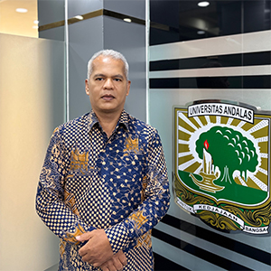

Struktur Organisasi
Direktorat Perencanaan dan Pengembangan
SA
Direktur

Syah Aidil Fitri, ST., M.Si
Direktur Perencanaan dan Pengembangan
Koordinasi
ZI

Kepala Subdit
Zainardi Ihsan, S.Kom
Perencanaan Strategis & Evaluasi Kinerja
ED

Kepala Seksi
Edison, S.M
Perencanaan Strategis dan Penetapan Kinerja
SA

Staf
Suci Aulia Antoni, S.H
Staf Seksi Perencanaan Strategis dan Penetapan Kinerja
FL

Kepala Subdit
F. Lenita Rias, SE., MM
Perencanaan Kerja, Anggaran Tahunan, dan Pengembangan
IR

Kepala Seksi
Irfandi, A.Md
Perencanaan Anggaran & Kerja Tahunan
RM

Staf
Rina Mayang Sari, S.E
Staf Seksi Perencanaan Anggaran & Kerja Tahunan
RI

Bendahara
Rismaini, A.Md
Bendahara Pengeluaran Bidang IV
AE

Kepala Seksi
Aminah Elvina, S.Pd., M.Hum
Evaluasi Anggaran
MR

Staf
Mutia Rahmi, S.K.M
Staf Seksi Evaluasi Anggaran
ER

Kepala Seksi
Eriyontoni, S.T
Pengembangan Fisik & Non Fisik
MR
Staf
Mutia Rahmi, S.K.M
Staf Seksi Pengembangan Fisik & Non Fisik
← Geser ke samping untuk melihat seluruh struktur →
Garis Komando
Garis Koordinasi